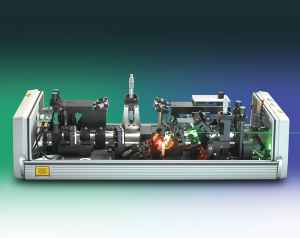
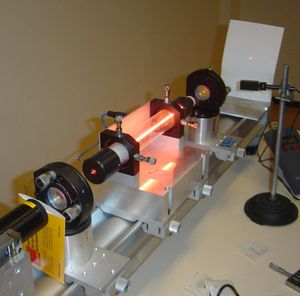
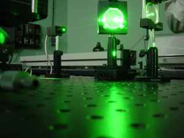
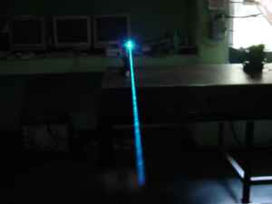

Home » Research » Thrust Areas
At the time of their invention in 1960, lasers were called "a solution looking for a problem". Since then, they have become ubiquitous, finding utility in thousands of highly varied applications in every section of modern society, including consumer electronics, information technology, science, medicine, industry, law enforcement and the military.
A laser (from the acronym Light Amplification by Stimulated Emission of Radiation) is an optical source that emits photons in a coherent beam. The back-formed verb to lase means "to produce laser light" or possibly "to apply laser light to".
Laser light is typically near-monochromatic, i.e., consisting of a single wavelength or color, and emitted in a narrow beam. This is in contrast to common light sources, such as the incandescent light bulb, which emit incoherent photons in almost all directions, usually over a wide spectrum of wavelengths.
Laser action is explained by the theories of quantum mechanics and thermodynamics. Many materials have been found to have the required characteristics to form the laser gain medium needed to power a laser, and these have led to the invention of many types of lasers with different characteristics suitable for different applications.A laser is composed of an active laser medium, or gain medium, and a resonant optical cavity.
The gain medium transfers external energy into the laser beam. It is a material of controlled purity, size and shape, which amplifies the beam by the quantum mechanical process of stimulated emission, discovered by Albert Einstein while researching the photoelectric effect. The gain medium is energized, or pumped, by an external energy source. Examples of pump sources include electricity and light, for example from a flash lamp o r from another laser. The pump energy is absorbed by the laser medium, putting some of its particles into high-energy, or excited, quantum states. When the number of particles in one excited state exceeds the number of particles in some lower-energy state, population inversion is achieved. In this condition, an optical beam passing through the medium produces more stimulated emission than the stimulated absorption so the beam is amplified. An excited laser medium can also function as an optical amplifier.
The light generated by stimulated emission is very similar to the input signal in terms of wavelength, phase, and polarization. This gives laser light its characteristic coherence, and allows it to maintain the uniform polarization and monochromaticity established by the optical cavity design.
The optical cavity, an example of a type of cavity resonator, contains a coherent beam of light between reflective surfaces so that each photon passes through the gain medium multiple times before being emitted from the output aperture or lost to diffraction or absorption. As light circulates through the cavity, passing through the gain medium, if the gain (amplification) in the medium is stronger than the resonator losses, the power of the circulating light can rise exponentially. However, each stimulated emission event returns a particle from its excited state to the ground state, reducing the capacity of the gain medium for further amplification. When this effect becomes strong, the gain is said to be saturated. The balance of pump power against gain saturation and cavity losses produces an equilibrium value of the intracavity laser power which determines the operating point of the laser. If the pump power is chosen too small, the gain is not sufficient to overcome the resonator losses, and the laser will emit only very small light powers. The min imum pump power required to begin laser action is called the lasing threshold. Note that the gain medium will amplify any photons passing through it, regardless of direction, however it is only the ones that happen to be aligned with the cavity that manage to make multiple passes through the medium and so have significant amplification.
The beam in the cavity and the output beam of the laser, if they occur in free space rather than waveguides (as in an optical fiber laser), are often Gaussian beams. If the beam is not a pure Gaussian shape, the transverse modes of the beam may be analyzed as a superposition of Hermite-Gaussian or Laguerre-Gaussian beams. The beam may be highly collimated, that is, having a very small divergence, but a perfectly collimated beam cannot be created, due to the effect of diffraction. Nonetheless, a laser beam will spread much less than a beam of incoherent light. The distance over which the beam remains collimated increases with the square of the beam diameter, and the angle at which the beam eventually diverges varies inversely with the diameter. Thus, a beam generated by a small laboratory laser such as a helium-neon (HeNe) laser spreads to approximately 1.6 kilometres (1 mile) in diameter if shone from the Earth's surface to the Moon. By comparison, the output of a typical semiconductor laser, due to its small diameter, diverges almost immediately on exiting the aperture, at an angle that may be as high as 50°. However, such a divergent beam can be transformed into a collimated beam by means of a lens. In contrast, the light from non-laser light sources cannot be collimated by optics as well or much.The output of a laser may be a continuous, constant-amplitude output (known as CW or continuous wave), or pulsed, by using the techniques of Q-switching, modelocking, or gain-switching. In pulsed operation, much higher peak powers can be achieved.
Some types of lasers, such as dye lasers and vibronic solid-state lasers can produce light over a broad range of wavelengths; this property makes them suitable for the generation of extremely short pulses of light, on the order of a femtosecond (10-15 s).
Though the laser phenomenon was discovered with the help of quantum physics, it is not essentially more quantum mechanical than are other sources of light. In fact the operation of a free electron laser can be explained without reference to quantum mechanics.
It should be understood that the word light in the acronym Light Amplification by Stimulated Emission of Radiation is typically used in the expansive sense, as photons of any energy; it is not limited to photons in the visible spectrum. Hence there are X-ray lasers, infrared lasers, ultraviolet lasers, etc. Because the microwave equivalent of the laser, the maser, was developed first, devices that emit microwave and radio frequencies are usually called masers. In early literature, particularly from researchers at Bell Telephone Laboratories, the laser was often called the optical maser. This usage has since become uncommon, and as of 1998 even Bell Labs uses the term laser.
The benefits of lasers in various applications stems from their properties such as coherency, high monochromaticity, and capability for reaching extremely high powers. For instance, a highly coherent laser beam can be focused down to its diffraction limit, which at visible wavelengths corresponds to only a few hundred nanometers. This property allows a laser to record gigabytes of information in the microscopic pits of a DVD. It also allows a laser of modest power to be focused to very high intensities and used for cutting, burning or even vaporizing materials. For example, a frequency doubled neodymium yttrium aluminum garnet (Nd:YAG) laser emitting 532 nanometer (green) light at 10 watts output power is theoretically capable of achieving a focused in tensity of megawatts per square centimeter. In reality however, perfect focusing of a beam to its diffraction limit is somewhat difficult.
Some of the basic applications of lasers are:
Communication
In consumer electronics, telecommunications, and data communications, lasers are used as the transmitters in optical communications over optical fiber and free space. They are used to store and retrieve data from compact discs and DVDs, as well as magneto-optical discs. Laser lighting displays (pictured) accompany many music concerts.
Science
In science, lasers are employed in a wide variety of interferometric techniques, and for Raman spectroscopy and laser induced breakdown spectroscopy. Other uses include atmospheric remote sensing, and investigation of nonlinear optics phenomena. Holographic techniques employing lasers also contribute to a number of measurement techniques. Laser (LIDAR) technology has application in geology, seismology, remote sensing and atmospheric physics. In astronomy, lasers have been used to create artificial laser guide stars, used as reference objects for adaptive optics telescopes.
Medicine
In medicine, the laser scalpel is used for laser vision correction and other surgical techniques. Lasers are also used for dermatological procedures including removal of tattoos, birthmarks, and hair; laser types used in dermatology include ruby (694 nm), alexandrite (755 nm), pulsed diode array (810 nm), Nd:YAG (1064 nm), Ho:YAG (2090 nm), and Er:YAG (2940 nm). Lasers are also used in photobiomodulation (laser therapy) and in acupuncture. They are also now used in dentistry for caries removal, endodontic/periodontic procedures, as well as tooth whitening and oral surgery procedures.
Industry
In industry, laser cutting is used to cut metals and othe r materials. Laser line levels are used in surveying and construction. Lasers are also used for guidance for aircraft. Lasers are used in certain types of thermonuclear fusion reactors. Lasers are also used extensively in both consumer and industrial imaging equipment. The name laser printer speaks for itself but both gas and diode lasers play a key role in manufacturing high resolution printing plates and in image scanning equipment.
Road safety
In law enforcement the most widely known use of lasers is for lidar, to detect the speed of vehicles.
Military
Military uses of lasers include use as target designators for other weapons; their use as directed-energy weapons is currently under research. Laser weapon systems under development include the airborne laser, the advanced tactical laser, the Tactical High Energy Laser, the High Energy Liquid Laser Area Defense System, and the MIRACL, or Mid-Infrared Advanced Chemical Laser.